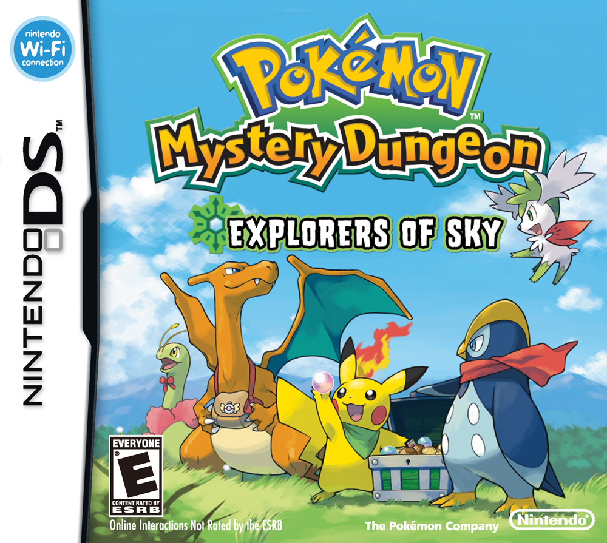
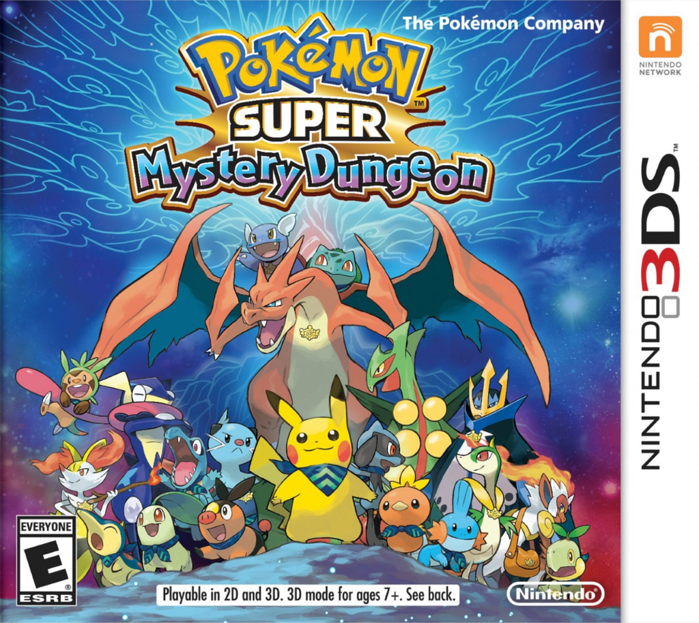
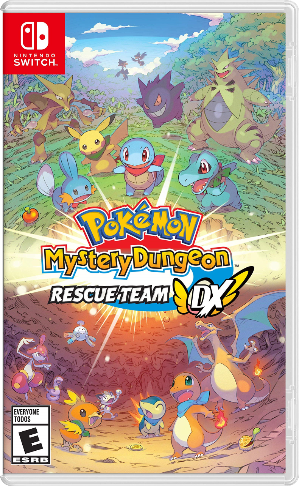

Dive into the world of Pokemon Mystery Dungeons
Pokemon mystery dungeon is a spinoff series devolped by Spike Chunsoft it has 11 games and had serveral manga and animated specials
Some of the more known games in the series are
- Pokemon Mystery Dungeon Blue Rescue Team
- Pokemon Mystery Dungeon Explorers of Sky 
- Pokemon Mystery Dungeon Super Myster Dungeon 
- Pokemon Mystery Dungeon Rescue Team DX 

The Basics
The Gameplay of the mystery dungeon series is based around exploring dungeons in a turn based combat mode with which you can have up to 4 recruitable parters that you can have join with you in the dungeons. Most of the gameplay takes place within mystery dungeons that have many floors and hostile pokemon that you have to fight or avoid and it is the duty of your exploration team to go in rescue people or complete your missions to further your ranking and continue the storyline.